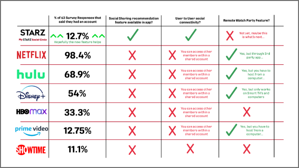

In the days of endless but overwhelming
amounts of new video content,
Streaming Users suffer from
surfing through choices and start to believe there’s
nothing good enough to watch.
MySTARZ Social Circle
Personal Design Challenge Case Study
Design a feature for the STARZ TV app that allows for the marketing team to highlight recommended content to
customers (at the optimal time) during the end of their video playback experience.
The Challenge:
1. Written Overview of Design Process and Thinking
2. High-Level User Flow + Wireframe
1. UX Researcher
2. UX Copywriter
3. UX Designer
1. STARZ App Version 4.3.12.70
2. Adobe XD
3. tvOS Material Design Kit
4. Adobe Illustrator
5. Adobe Photoshop
6. Google Forms
Phase 1: User Research
Phase 2: Definition and Ideation
Phase 3: Prototyping
Phase 4: Testing
and Iterating
Deliverables:
Roles: (This was a Personal Design Challenge but I worked through many different roles)
Tools Used:
Process Overview:
User Research
Prototyping
Testing and Iterating
Michael, Age 22
Max, Age 21
Definition and Ideation
Phase 1
Phase 3
Phase 4
Phase 2
Interview and Survey Plan:
User Insight Statement:
User Insight Statement:
User Insight Statement:
Feature Prioritization Matrix:
Value Proposition:
User Scenario:
Competitor Analysis:
Sketches:
Wireframe + User Flow:
User Testing Candidates:
Takeaways from User Tests:
5
63
18-65
1-1 Interviews
Survey
Responses
Age of Users
Represnted
Interview and Survey Questions:
Interview and Survey Insights:
User Persona:
1. What TV streaming platforms do you currently use?
2. What is the optimal time after viewing a movie or show for recommended content
to appear?
3. Which type of recommended content do
you prefer?
a. Recently
Viewed
b. New Content
c. Favorites
d. Suggested Content
4. Do you feel like suggested content algorithms work?
5. How do you feel like this content should be shown on the screen after playback?
6. If your friends that used the same streaming services as you could recommend content to you through
these apps in place of the typical types of recommended content that you’re typically shown, would you
be more inclined to view our friends suggestion rather than what an algorithm provides?
Billy loves to watch movies and keep up with his favorite tv shows in his free time. In light of the pandemic,
he puts in effort to stay in touch with friends through social media and misses the days of being able to hang
out with his friends and show them his favorite tv shows and new movies that he has found when binging content
on the multiple steaming tv platforms he subscribes to. He is quick to adapt to technology and does not
stuggle to interact with or navigate digital experiences.
How Might We?
1. Create a feature in the STARZ app that allows users to recommend new content to their friends while also
being able to provide friend’s recommendations to users?
2. Show recommended content to users during an
optimal time near the end of video playback so that users actually continue to use the STARZ app?
Point of View Statement:
A new feature of the STARZ app will integrate connected social sharing between users so that more
recommended content near the end of video playback can be exclusively inline with the interests of
specific users.
Problem Statement:
One of the top reasons for STARZ app cancellations is believed to be a perceived lack of relevant content.
However, it is believed that the perceived lack of content is indeed a perception, and the reality is that
there is a vast amount of relevant movies and series for users to find and watch in the STARZ app.
Both Michael and Max pointed out how Flow 4 required a user to pull out their phone and find the contact
information for their friends since most people these days do not remember every single contact in their
phone. Therefore, it could be considered that this ask breaks UX best practice compliance with simplicity in
call to action flows. However, compared to having to enter a friend’s email, both Mike and Max agreed that the
phone number route was an easier option for this request of a user. Michael also pointed out the potential for
a marketing opportunity that STARZ has by encouraging users to recommend their friends to the feature and the
app as a whole in the event that a user’s friend may not be currently using the app. He went on to say that
this could be a big incentive for new users to try the app and sign up for a free trial if it meant that they
could pursue the content that their friends recommend for them.
I LIKE:
I WISH:
WHAT IF:
- Personalizing my digital
experiences so that suggested content algothrims really feed to my
preferences
- Being notified about new content in a platform
- Keeping up with what my
friends and family are watching thanks to not seeing them due to the pandemic
- Recommending
something to my friends that they may not have seen before
- I could get content suggestions that are based on what my friend’s and family’s viewing habits are on
streaming platforms
- Directly refer my friends and family to content within streaming platforms
that we both use
- Personalize recommended content algorithms in the STARZ app manually
- Link my social media
accounts to my STARZ app
- I could do remote watch
parties with
my friends in the STARZ app
The MySTARZ Social Circle feature will integrate a social sharing recommendation category to users during the
end of their video playback based on the content that is shared between connected users. A button will be
added to the content selection screens so that users can share content that they would like to recommend to
the other users that they are connected with through MySTARZ Social Circle feature.
- Normal Video Streaming Platform User
- Uses 5 different streaming platforms
- Enjoys
watching shows his friends recommend
- Frequent Video Streaming Platform User
- Uses 7 different streaming platforms
- Enjoys
watching shows his friends recommend, but also loves recommending shows to his friends that they haven’t seen
before
